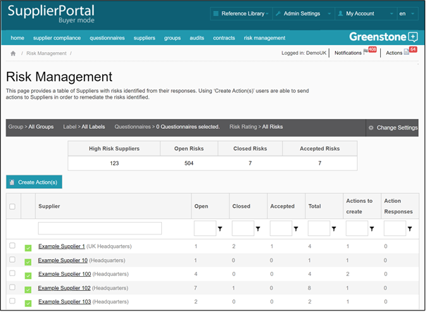

The risk management function enables you to identify suppliers that have triggered risk flags and send Actions directly to the suppliers in order to manage and remediate any risks.
The risk management dashboard is populated with those suppliers that have triggered high / medium / low risk flags (see Admin Settings > Flagged Questions). Suppliers that have triggered ‘No risk’ flags are not placed into the risk management dashboard.
The supplier grid on the dashboard can be filtered using the ‘Change Settings’ box. The options for filtering the dashboard are groups, labels, questionnaires, and risk rating. The statistic boxes above the grid will then display the numbers that relate to the list of suppliers displayed.
These same risk stats are displayed per supplier on the grid – open / closed / accepted / total. In addition to these you have two further columns - ‘Actions to create’ and ‘Action response’.
‘Actions to create’ indicates the number of risks for which a supplier action has yet to be created. The ‘Action response’ column indicates when a supplier has provided a response to an action. All columns can be filtered by clicking on the column header.
